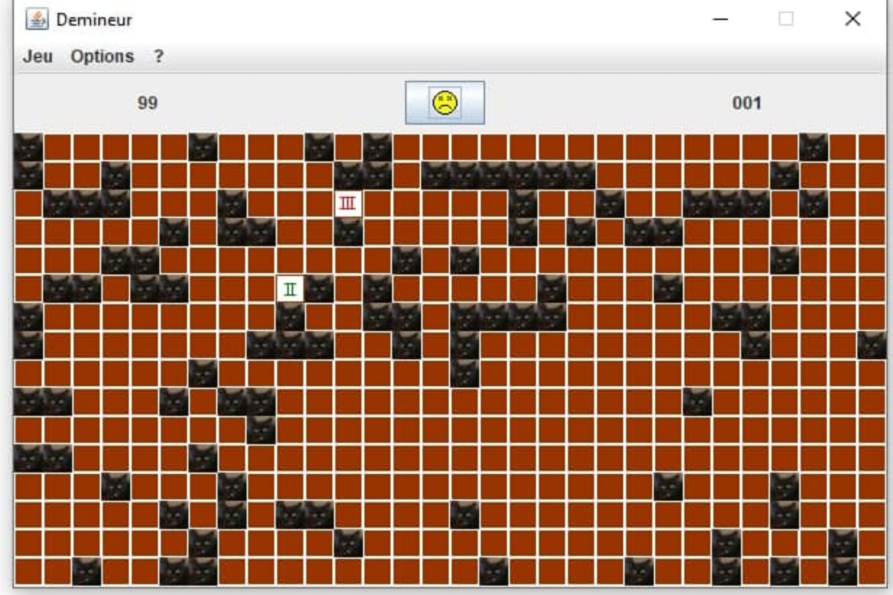

Étudiant à L’IUT Informatique de Bordeaux
Passionné de Sécurité Informatique, et de programmation. Durant mon temps libre j'aime programmer, apprendre de nouvelles choses ou avancer sur mes projets personnels. J’aime la lecture les voyages les rencontres et le challenge.
A l'avenir, je souhaite intégrer une école d'ingénieur ou une école informatique. Puis me spécialiser dans la sécurité informatique.
Sur la page about vous trouverez diverses informations fort peu intéressantes à mon propos, ainsi que mon CV. Sur la page blog vous trouverez des articles de blog, que vous pourrez retrouver sur mon compte GitHub. Vous pouvez consulter mon compte Twitter.
Démineur
Projet de démineur mené en duo dans le cadre de la CPOA (Conception et Programmation Objet Avencé).
Morpion
Jeu de morpion, disponnible en ligne : Vous pouvez y jouer ici. Retrouvez aussi le dépot du projet a cette adresse. Programmé en PHP vanilla.

Poker
Jeu de Poker programmé dans le cadre de l'IHM (Interface Homme Machine), c'est a dire la concepion d'interfaces utilisateur. Codé en C#.

Discothèque
Gestionnaire de musiques, programmé en C# avec les technologies de base de données OLEBD et LINQ

Site PT1
Dans le cadre du PT1 (Projet tutoré 1). Nous avons du réaliser un site pour présenter l'entreprise que nous avons visité.

Site exemple flex
Site pour les cours de WEB premier entrainement au flex. Le site est disponnible ici, et le dépot du projet est disponnible ici. Ajout d'un tchat sans rapport avec l'exercice.

Pong
Jeu de PONG programmé dans le cadre de la POO (Programmation Orientée Objet). Amélioration personnelle : une version pour jouer en ligne.

Site de SNT
Site pour le lycée, et plus précisément la matière SNT des nouveaux programmes scolaires.

Sunny
Projet de trackeur solaire présenté lors de TPE. Programmé en HTML/CSS, JS, et arduino, ainsi qu'un peut de python. Vous pouvez visiter le site du projet.


Self-e
Système de réservation de repas, ayant pour objectif la réduction du gaspillage alimentaire dans les cantines scolaires. Présentatation du projet ici. On parle de nous !

Enigma
Site de présentation de la machine énigma de crymtographie.

Optique
Simulation de lentille conevrgente.

Class Yohann_Vernhes{ // Incredibely creative, self maden programmer private void construct(){ this.type = new Programmer(); this.name = 'Yohann Vernhes'; this.contact = 'yohann.vernhes@gmail.com'; } public Work work(){ While(this.haveCoffe()){ job.acheive(); } return jobDone; } // q u i c k s u m u p : public String masteries(){ return [ 'object' => {'JSE', 'JEE', 'C#', 'Cpp', 'Python2/3'}, 'embedded' => {'C11/17/99', 'Assembly'}, 'script' => {'Bash', 'Python2/3', 'PHP'}, 'web' => {'HTML', 'CSS', 'JS', 'BootStrap', 'Symfony'} ]; } public String pastime(){ return " coding random stuff like ┌─────────────────────────────┐ │ ╔═════════╗ ┏┅┅┅┅┅┅┓ │▒ │ ║ MORPION ║ ┇ GAME ┇ │▒ │ ╚════╦════╝ ┗┅┅┅┅┅┅┛ │▒ ╞═╤═════╩═════╤═══════════════╡▒ │ ├───┬───┬───┤ │▒ │ │ X │ │ O │ ╭╴ ╶╮ │▒ │ ├───┼───┼───┤ │ BY │ │▒ │ │ │ X │ O │ │ │ │▒ │ ├───┼───┼───┤ │ LOSTSH │ │▒ │ │ │ │ X │ ╰╴ ╶╯ │▒ │ └───┴───┴───┘ │▒ └─────────────────────────────┘▒ ▒▒▒▒▒▒▒▒▒▒▒▒▒▒▒▒▒▒▒▒▒▒▒▒▒▒▒▒▒▒▒ "; } }